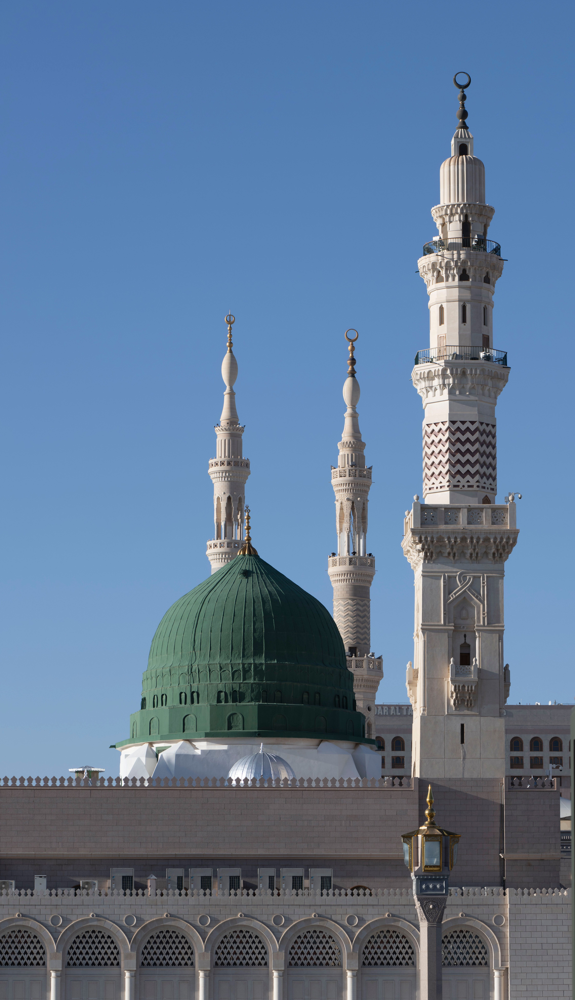

Madinah Al-Munawwarah
The Radiant City, and the second holiest site in Islam, home to the Prophet's Mosque and centuries of history.
Get StartedLandmarks of Madinah
Al-Masjid an-Nabawi
The Prophet's Mosque is the second holiest mosque in Islam and the final resting place of the Prophet Muhammad (peace be upon him).
Quba Mosque
Established in 622 CE upon the Prophet's arrival in Madinah, Quba Mosque holds the distinction of being the first mosque built in Islam.
Mount Uhud
Just north of the city, Mount Uhud was the site of the Battle of Uhud in 625 CE and remains a place of deep historical and spiritual significance.
Featured Content
After the Prophet Muhammad's migration from Makkah in 622 CE, an event known as the Hijrah, Madinah became the spiritual and political center of the early Muslim community. Construction of Al-Masjid an-Nabawi began that same year and was completed within several months, and the mosque has remained the heart of the city ever since.

Explore More
Masjid al-Qiblatayn
Known as the Mosque of the Two Qiblas, this site marks the moment the direction of prayer was changed from Jerusalem to Makkah.
Read about visiting the mosques of MadinahPlanning Your Visit
Most travelers visit Madinah as part of a Hajj or Umrah journey, with pilgrims and tourists welcomed year-round to its mosques and historic sites.
See visitor tipsReady to plan your journey?
Explore the mosques, historic sites, and neighborhoods of Madinah before you go.
View the visitor guide